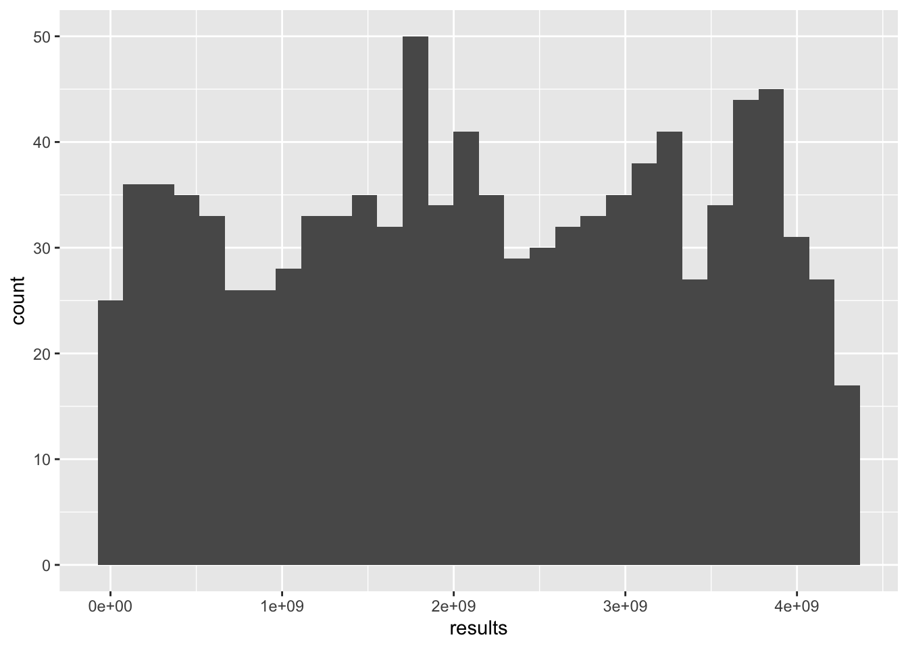

3 Linear congruential generator
We clearly need a better PRNG than middle-square if we want to have any hope of simulating random events. Luckily there have been many new ideas since 1949. Today, the most widely used general purpose PRNG is called the Mersenne Twister. It was developed in 1997 by Makoto Matsumoto Takuji Nishimura to overcome the flaws of the old PRNGs. This particular algorithm is used as the default PRNG in python, r, c++, and many more programming languages. The Mersenne Twister is based of of a simpler algorithm called a “Linear congruential generator” which we will look at
The algorithim takes in 4 inputs (as opposed to just the 1 that middle-square did). the inputs are : - m the modulus - a the multiplier - c the increment - X_0 the seed
With this method, we want to pick a large value for m, such as 2^32
## [1] 388427lets look at a distribution and plot it

Wow, much better than the middle square. Notice how there isn’t an obvious pattern that got repeated. This means that this algorithm has a much higher period, which is one of the main ways to determine how “good” as PRNG is.